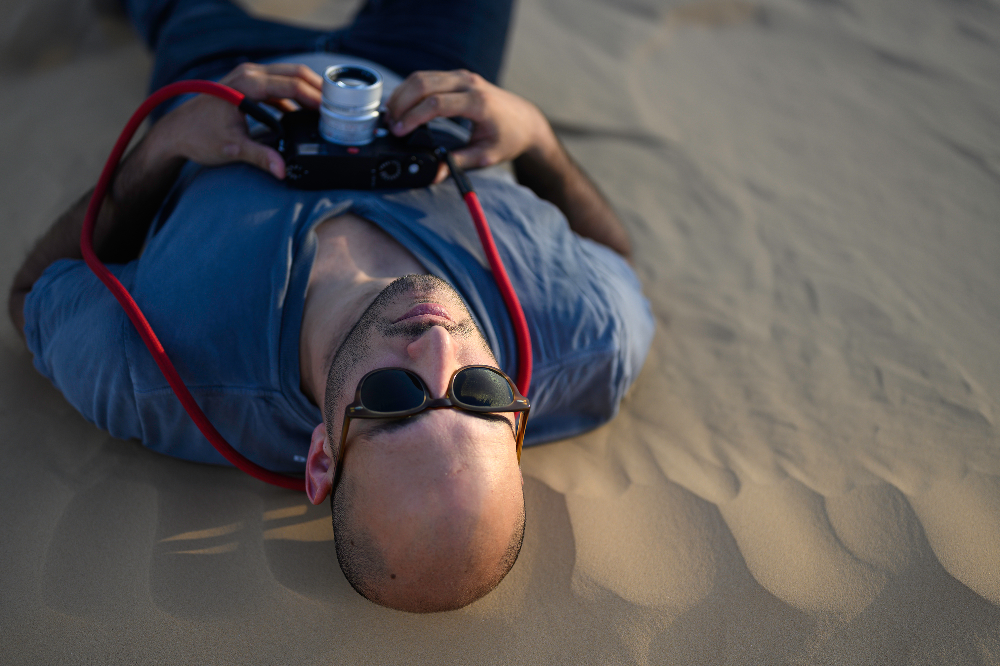
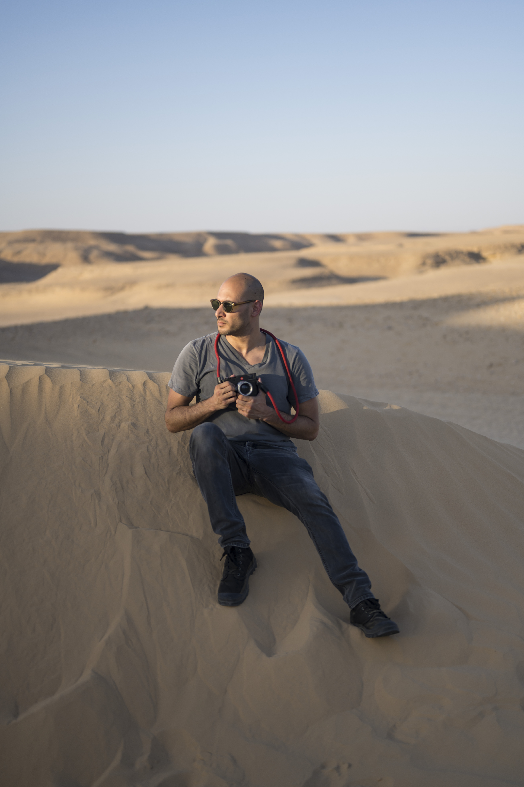

"My eyes were being trained long before I ever held a camera." — Roy Ezuz
I grew up in Givatayim, a quiet suburb pressed against the edge of Tel Aviv. I was shy. Introverted. The kind of child who stood at the perimeter of every room and watched — not from disinterest, but because the edges were where the truth was. Being on the margins wasn't always comfortable, but it did something I only understood much later: it built an inner world. A habit of watching. Of reading people not by what they said, but by how they moved, where their eyes went when they thought no one was looking.
Not therapy — something more active. A language I didn't know I had.
The camera found me in 2020. The world had stopped. I was navigating a period of personal fracture — the kind that rearranges everything you thought you knew about your own life. I needed something to make sense of the disorder, and the camera became that instrument. I stepped outside, and for the first time, the act of looking became a form of understanding. Everything I know, I learned by doing — by walking, by failing, by pressing the shutter thousands of times until the images started to match what I was actually seeing.

"The differences between cultures became less interesting to me than the similarities running beneath them." — Roy Ezuz
Jerusalem is where my photography stopped being general and became specific. A city layered with cultures, tensions, and centuries of unresolved coexistence — it forced me to look past the surface. I stopped photographing places and started photographing people: their emotions, their rituals, their stillness under pressure. The differences between cultures became less interesting to me than the similarities running beneath them. Jerusalem gave me my subject. Everything I have shot since is, in some way, an extension of what that city taught me.
It took years and thousands of frames to distill that lesson into a voice. The cities came one after another — Mumbai, Beijing, Paris, New York — each one a different education. Mega-cities don't yield to passive observation. They are too dense, too fast, too layered. You have to walk them for hours, let their rhythm replace your own, until the city stops being a backdrop and becomes a collaborator. My photography matured through that process — from instinct into intention.
Every city before it taught me how to see. Madrid taught me how to feel. What you find beautiful is not a matter of consensus. It is purely a matter of the emotional state you carry inside. That lesson attached itself to me. I will always carry it.
Today I am based in Israel, but my work spans continents. The street is my primary domain for now, but I am not bound to it. My pursuit is broader: to document the human condition wherever it reveals itself — and to show that beneath the noise of our differences, we are far more alike than we dare to admit.
This pursuit is physical. This kind of photography cannot be done from a distance. There are nights I return to wherever I'm staying completely dismantled — legs heavy, feet wrecked, body spent from miles of unbroken walking. The longer I walk, the deeper I go: into the city, into its rhythm, into a state where thinking stops and seeing takes over. The viewfinder completes that process. When I look through it, everything else falls away. No judgment, no preconception, no noise. Just the world exactly as it is, framed in a small glass window. That is the closest thing I know to stillness.
I am not interested in the obvious. A perfectly composed shot of a famous landmark, pristine and static, is ultimately a postcard — a view that belongs to everyone and reveals nothing. My eyes go somewhere else entirely: to the margins, to the unscripted drama unfolding just beyond those monuments, to the moment nobody planned.
Photography, at its core, is a practice of discovery. The world is not short of beauty. What it is short of is attention. People move through their days surrounded by small, genuine miracles — a shared glance of exhaustion, a sudden embrace at a crossroads, a child's expression of pure, uncalculated joy — and they walk right past them. My job is to stop walking and pay attention. When I catch one of those moments, the photograph does something extraordinary: it makes the ordinary permanent. It forces you to look at what you otherwise would not have seen.
I shoot in color. This is deliberate, and worth being precise about. Black and white is not a lesser path — it is its own language, and in the right hands it does something remarkable: it distills emotion to its purest form, strips away the noise, and makes an image feel timeless in a way that is almost impossible to argue with. The masters who work in monochrome have earned every frame. But my pursuit is unfiltered truth, and the world I photograph is not monochrome. Color is not decoration. It carries weight, mood, and meaning — it is a layer of reality, not an addition to it. Removing it, for my purposes, would be its own form of editing. I want the full, unvarnished scene — because the more honestly a photograph represents reality, the more powerfully it can cut through the things that are not real at all.
And so much of what surrounds us is not real — though we have agreed, collectively and quietly, to pretend otherwise. Money, status, ego, social hierarchies: these are not features of the universe. They are arrangements we have made, stories we repeat so consistently that we have forgotten they are just stories. The lens has no memory of those arrangements. It sees a face, a gesture, a body moving through space — and at that level, the agreements dissolve. A genuine emotion on a stranger's face obliterates every artificial boundary between us. My photography reaches past those constructed layers and anchors the viewer to what is actually real: the universal human thread that runs beneath the noise of our differences.
To do that honestly, I do not stage. I do not manipulate. I present the situation as it unfolded in front of me. That discipline is not a limitation — it is the source of the work's power. An unmanipulated photograph of a real moment becomes an open space. The viewer walks into it and projects their own memories, their own emotions, onto someone else's fraction of a second. That is the connection I am after.
My process lives in two modes. Sometimes a moment catches my eye and the shutter fires on instinct — pure reflex, no deliberation. But more often, the work is slower. I walk for miles, reading the light, the geometry, the rhythm of a place, until a location stops me. A particular intersection of shadow, architecture, and atmosphere. A stage. Once I find it, the motion ends completely. I become static.
I wait — sometimes minutes, sometimes an hour — for the living element to enter the frame and complete it. That rule is non-negotiable: there must be life in the picture. A person, occasionally an animal. Without it, the image is just architecture, no matter how beautiful and impressive it may be. It is the living presence that transforms cold geometry into a story. It is the ingredient that brings time into the frame — and with it, a claim on eternity.
When that element arrives — when timing, light, and human presence align — the shutter fires, and that exact configuration of life is gone forever. It will never reassemble. That is what separates a photograph from every other art form: it is the only one that captures something that truly cannot be repeated. That is why I do this.

"The eye builds the vision.
Gear gives it a signature." — Roy Ezuz
Why does gear matter at all?
There is a well-known saying: the best camera is the one you have in your hands. I agree with the spirit of it — the photographer's eye is what gets imprinted on the final image, not the serial number on the body. But I think that saying underestimates how much gear shapes the work. The eye builds the vision. Gear gives it a signature.
Put two photographers on the same corner. Give one a 50mm prime. Give the other a 70-200mm zoom. Come back in a year and look at their bodies of work. You will be looking at two entirely different aesthetic languages — different distances, different relationships with the subject, different ways of being in the world. Gear doesn't make the eye. But it shapes what the eye produces.
Every camera and lens has limitations. And limitations, if you choose the right ones, narrow your focus. They define your niche. They become your signature.
Why Leica?
At the beginning, I did what most photographers do. I spent months watching reviews, comparing bodies, reading forums, trying to build certainty out of someone else's opinion. I ended up with two cameras and seven lenses. Most of them gathered dust.
In 2022, I decided to stop. I wanted quality over quantity. Simplicity over options. A camera that would get out of the way.
In Wetzlar — where Leica cameras have been made for over a century — my father and I walked into the store, and someone handed me an M11 and a 50mm lens and told me to try it out. I took it into the forest nearby for a few hours. When I came back, the decision had already been made.
The Leica M11 is built around a different philosophy from other manufacturers. Most brands compete on features — more buttons, more modes, more automation. The M11 strips all of that away. What remains is a rangefinder: a small glass window through which you see the world exactly as it is. Not a screen. Not a rendering. The world, framed in glass. When you press the shutter, there is no blackout — you never lose sight of what is happening outside your frame. You see the moment before it, during it, and after it. The frame lines show you what the lens sees, but your eyes are capable to see everything around it — the person about to enter, the gesture forming at the edge.
That experience is addictive. You find yourself looking for reasons to stay out longer.
The body itself is part of the philosophy. Deceptively small for what it produces. In a crowd, you are not carrying a declaration of intent. You are carrying something that barely registers. That invisibility is not incidental — it is essential. The closer you get without disturbing what you're photographing, the more honest the image is.
You pick your lens for the day. After that, there are no decisions to make about equipment — only about the image. You disappear into the city. Nothing stands between you and what you're seeing.
 It is where my decision has been made.
It is where my decision has been made.Wetzlar, 2022.
The 50mm shows you the world as it is.
The 28mm tells you the story around it.
Why only two lenses?
For the first year and a half, I used one lens: a 50mm Summilux. One camera, one focal length, manual focus only. The combination forces you to work. You cannot zoom. You cannot rely on autofocus to make the decision. You move your feet to find the frame. You turn the focus ring to commit to the moment. There is a clarity that comes from having no other option — you stop thinking about equipment and start thinking entirely about the image.
I added the 28mm after that year and a half — not out of impatience, but because I wanted another layer. The 50mm is intimate. It isolates. It is the lens for faces, for close encounters, for the decisive expression on the street. It is also the focal length closest to what the human eye sees naturally — no distortion, no exaggeration of perspective, no compression of space. Every other focal length interprets the world. The 50mm simply shows it. There is something philosophically consistent about that: a camera built to strip away automation, paired with a lens built to strip away interpretation.
The 28mm opens the frame. It pulls in the world around the subject — the architecture, the light, the crowd pressing at the edges. A wide lens creates perspective: a relationship between foreground and background that places the subject more honestly inside their environment.
Both lenses open to f/1.4. That maximum aperture does something no zoom can replicate — it gives the image a third dimension. The subject is sharp; the world behind them dissolves. Not as a stylistic trick, but as a statement of priority. This is what matters. Everything else recedes. That separation between subject and environment is where the intimacy of the image lives.
Two lenses is not a constraint. It is a decision. Every photograph I make has been made with one of two possible fields of view. That limitation forces me to know my tools completely — and to know, before I raise the camera, exactly what I am trying to say.
What does manual focus demand of you?
When you shoot in autofocus, you hand a decision to the camera. And the camera will make the obvious choice — the eye, the closest subject, the most legible element in the frame. Most of the time, that works. But photography is not obligated to be obvious. Your message is what should dictate the final image — not the camera's algorithm.
Manual focus returns that decision to you. It requires practice. It requires accepting that at f/1.4, with a subject close enough to fill the frame, the depth of field is measured in millimeters — and you will miss. You will come home with frames that almost worked. That cost is real.
But when you decide where the focus lands and you get it right, something shifts. The photograph belongs to you in a way that an autofocused image never quite does. The act of deciding — physically, deliberately — where the eye should go is itself a creative choice. It is the first sentence of the image.
Does anything about your gear frustrate you?
Of course. There are evenings when I open the files on my computer and find that I missed focus on something I cannot go back and reshoot. The M11 is not a fast camera — in purely spontaneous situations, it will sometimes be too slow. These are real limitations.
But I have come to understand something about satisfaction: it is not a byproduct of success alone. It is a byproduct of success earned through hard work and genuine intention. Limitations are not obstacles to that — they are part of the path toward it. Every missed frame pulls me back to the present. Every slow shutter forces me to be more deliberate. The Leica's constraints don't diminish the experience. They are the experience.